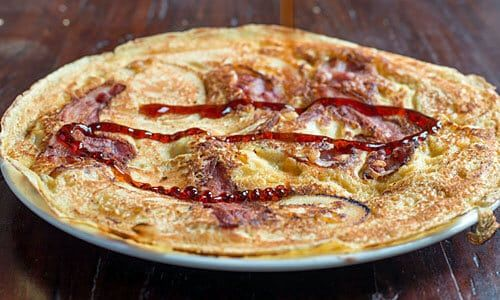

Dutch Pancakes

What an interesting meal you might be thinking to yourself. A savory
pancake, so thin yet so flavorful. Made with cheese and bacon but then topped
with powdered sugar and thick syrup. Yes, this is the ultimate "anytime" food.
Breakfast, lunch, dinner, it's all in one and today, you will learn how to make on.
Ingredients
- 2 cups flower
- 2 eggs
- 2 cups milk
- 1/2 tsp salt
- Butter for cooking
- Optional Add Ins: Bacon, cheese, mushrooms, apples
Instructions
- In a large bowl, beat the egg until slightly foamy. Add the milk and salt, whisking to combine. Add the flour, slowly, whisking as you add, until the batter is smooth.
- Heat a 10 inch skillet over medium heat. Add a little butter to coat the skillet.
- Add cup of batter to the pan and swirl it around to coat the pan. (If using add-ins, sprinkle them over top of the wet batter.) Cook the pannekoek over medium heat until it is just getting dry on the top and releases from the pan, 2-3 minutes.
- Flip the pannenkoek and cook for 1-2 minute on the second side, until detailed with browning butter.
Tips
- The first pancake will always come out bad.
- Don't let anyone tell you what not to put in your pancakes.